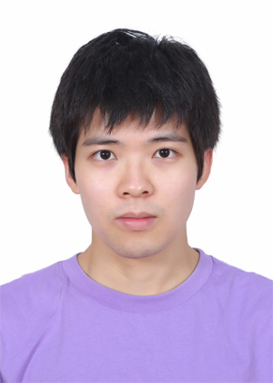

2023 — 2028 (est.)Pittsburgh, US
Ph.D., Machine Learning
Carnegie Mellon University, School of Computer Science
I am a Ph.D. student in the Machine Learning Department at Carnegie Mellon University and a member of the Auton Lab, advised by Prof. Artur Dubrawski. I did my undergraduate studies in the Yao Class at Tsinghua University.
My research spans machine learning for healthcare and LLM post-training. My work aims to democratize expertise: on the healthcare side, I develop affordable outbreak detection systems for hospitals using multimodal ML on routinely collected data (MALDI-TOF spectra, AMR profiles and EHR); on the LLM side, I design learning scaffolds for LLM post-training, inspired by cognitive learning strategies of humans.

Education
Carnegie Mellon University, School of Computer Science
Tsinghua University — Yao Class, Institute for Interdisciplinary Information Sciences · GPA 3.91/4.00
Industry
TikTok
Modeling user preference over professionally generated content (PGC) to improve recommendation performance.
Publications
Notes to Self: Can LLMs Benefit from Experiential Abstractions?
Towards Practical Multimodal Outbreak Detection
Exploring the Utility of MALDI-TOF Mass Spectrometry and Antimicrobial Resistance in Hospital Outbreak Detection
Depth as a Scaling Vector: Simple Pruning and Evaluation of Emergent Abilities in Pruned LLMs
LayerMerge: Modality-Agnostic Depth Pruning for Efficient Foundation Model Deployment
From Aggregation to Guidance: Strategies for Personalized Federated Fine-Tuning of Foundation Models
Bridging the Utility Gap Between MALDI-TOF and WGS for Affordable Outbreak Cluster Detection
Multimodal Structure Preservation Learning
A Probabilistic Knowledge Graph Approach for Target Identification
Improving Target-disease Association Prediction through a Graph Neural Network with Credibility Information
† equal contribution · * corresponding author
Teaching
TA for Prof. Ruslan Salakhutdinov
TA for Prof. Ruslan Salakhutdinov
Personal
I am a skilled and avid pianist with a wholehearted love for classical music (e.g., Chopin's). See my recital here. I am currently working on Chopin's Preludes (Op. 28) and Sonata in B minor (Op. 58).